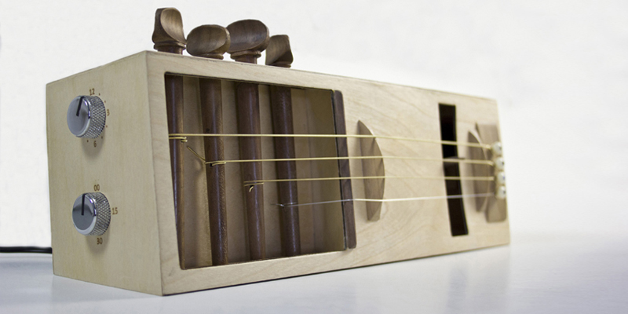

The Acoustic Alarm allows the user a more pleasant way of waking up in the morning. Inspired by various musical instruments, The Acoustic Alarm uses a rotational pick to pluck guitar strings to awaken its user.
Human emotions are influenced by many factors, and one of these factors which annoy people the most is the sound of their morning alarm. The Acoustic Alarm scraps the annoying morning alarm, and replaces it with a relaxing acoustic tune, which has been designed for the user to customise the tone of their alarm by adjusting the tuning pegs.